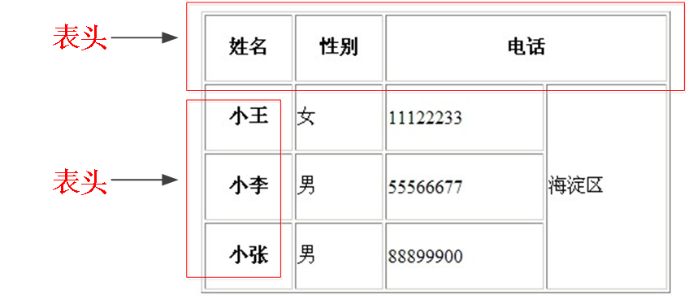
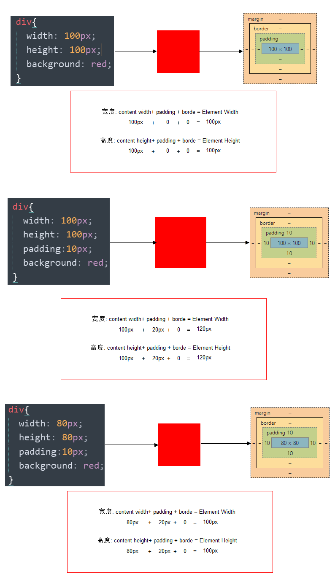

HTML 初识
HTML 指的是超文本标记语言 (Hyper Text Markup Language)是用来描述网页的一种语言, HTML 不是一种编程语言，而是一种标记语言 (markup language)
HTML骨架格式
1 | <html> |
| 标签名 | 定义 | 说明 |
|---|---|---|
<html></html> |
HTML标签 |
页面中最大的标签，我们成为 根标签 |
<head></head> |
文档的头部 | 注意在head标签中我们必须要设置的标 title |
<titile></title> |
文档的标题 | 让页面拥有一个属于自己的网页题 |
<body></body> |
文档的主体 | 元素包含文档的所有内容，页面内容 基本都是放到body里面的 |
<title></title> |
文档的标题 | 让页面拥有一个属于自己的网页题 |
文档类型<!DOCTYPE>
<!DOCTYPE html>一些老网站可能用的还是老版本的文档类型比如 XHTML之类的，但是我们学的是HTML5,而且HTML5的文档类型兼容很好(向下兼容的原则)，所以大家放心的使用HTML5的文档类型就好了。就是告诉浏览器按照HTML5 规范解析页面.
页面语言lang
<html lang="en"> 指定html 语言种类, <html lang="zh-CN"> 指定该html标签 内容 所用的语言为中文
最常见的2个：
en定义语言为英语zh-CN定义语言为中文
字符集
<meta charset="UTF-8" />
utf-8是目前最常用的字符集编码方式，常用的字符集编码方式还有gbk和gb2312。
- b2312 简单中文 包括6763个汉字
- BIG5 繁体中文 港澳台等用
- GBK包含全部中文字符 是GB2312的扩展，加入对繁体字的支持，兼容GB2312
- UTF-8则基本包含全世界所有国家需要用到的字符
注意：
这句代码非常关键， 是必须要写的代码，否则可能引起乱码的情况, 这句话是让html文件是以UTF-8编码保存的， 浏览器根据编码去解码对应的html内容, 一般情况下统一使用 “UTF-8” 编码, 请尽量统一写成标准的"UTF-8"，不要写成"utf-8"或"utf8"或"UTF8"。
HTML常用标签
标题标签h
在HTML中，一共有六级标题标签 h1 ~ h6在显示效果上h1最大，h6最小，但是文字的大小我们并不关心使用HTML标签时，关心的是标签的语义，我们使用的标签都是语义化标签,6级标题中，h1的最重要，表示一个网页中的主要内容，h2 ~ h6重要性依次降低,对于搜索引擎来说，h1的重要性仅次于title，搜索引擎检索完title，会立即查看h1中的内容,h1标签非常重要，它会影响到页面在搜索引擎中的排名，页面只能写一个h1
1 | <h1> 标题文本 </h1> |
段落标签p
可以把 HTML 文档分割为若干段落, 块级元素
1
<p> 文本内容 </p>
水平线标签hr
在网页中常常看到一些水平线将段落与段落之间隔开，使得文档结构清晰，层次分明。这些水平线可以通过插入图片实现，也可以简单地通过标签来完成，<hr />就是创建横跨网页水平线的标签。
换行标签br
<br /> 用于换行
div 和 span标签
div标签 用来布局的，但是现在一行只能放一个divspan标签 用来布局的，一行上可以放好多个span
文本格式化标签
在网页中，有时需要为文字设置粗体、斜体或下划线效果，这时就需要用到HTML中的文本格式化标签，使文字以特殊的方式显示。

图像标签img
使用img标签来向网页中引入一个外部图片，img标签也是一个自结束标签
src：设置一个外部图片的路径alt：可以用来设置在图片不能显示时，对图片的描述,搜索引擎可以通过alt属性来识别不同的图片,如果不写alt属性，则搜索引擎不会对img中的图片进行收录width：可以用来修改图片的宽度,一般使用px作为单位height：可以用来修改图片的高度，一般使用px作为单位title: 鼠标悬停时显示的内容boder: 设置图像边框的宽度1
2
3
4
5
6
7<img src="2.gif" alt="这是一个大松鼠" width="100px" height="500px" /> <img src="cz.jpg" width="300" height="300" /><br />
带有边框的<br />
<img src="cz.jpg" width="300" height="300" border="3" /><br />
有提示文本的<br />
<img src="cz.jpg" width="300" height="300" border="3" title="这是个小蒲公英" /><br />
有替换文本的<br />
<img src="cz.jpg" width="300" height="300" border="3" alt="图片不存在" />宽度和高度两个属性如果指设置一个，另一个也会同时等比例调整大小,如果两个值同时指定则按照你指定的值来设置,一般开发中除了自适应的页面，不建议设置width和height
链接标签
在HTML中创建超链接非常简单，只需用标签把文字包括起来就好。
1
<a href="跳转目标" target="目标窗口的弹出方式">文本或图像</a>
| 属性 | 作用 |
|---|---|
href |
用于指定链接目标的url地址，（必须属性）当为标签应用href属性时，它就具有了超链接的功能 |
target |
用于指定链接页面的打开方式，其取值有_self和_blank两种，其中_self为默认值，__blank为在新窗口中打开方式。 |
列表标签
无序列表 ul
无序列表的各个列表项之间没有顺序级别之分，是并列的。其基本语法格式如下：
1
2
3
4
5<ul>
<li>列表项1</li>
<li>列表项2</li>
<li>列表项3</li>
</ul>
注意：
1.<ul></ul>中只能嵌套<li></li>，直接在<ul></ul>标签中输入其他标签或者文字的做法是不被允许的。
2.<li>与</li>之间相当于一个容器，可以容纳所有元素。
3.无序列表会带有自己样式属性，放下那个样式，一会让CSS来！
有序列表 ol
有序列表即为有排列顺序的列表，其各个列表项按照一定的顺序排列定义，有序列表的基本语法格式如下：
1
2
3
4
5<ol>
<li>列表项1</li>
<li>列表项2</li>
<li>列表项3</li>
</ol>
** 所有特性基本与ul 一致。 但是实际中比 无序列表 用的少很多。**
自定义列表
定义列表常用于对术语或名词进行解释和描述，定义列表的列表项前没有任何项目符号。其基本语法如下：
1
2
3
4
5
6
7
8<dl>
<dt>名词1</dt>
<dd>名词1解释1</dd>
<dd>名词1解释2</dd>
<dt>名词2</dt>
<dd>名词2解释1</dd>
<dd>名词2解释2</dd>
</dl>
表单标签
在我们网页中，我们也需要跟用户进行交互，收集用户资料，此时需要表单。
input 控件
语法：
1
<input type="属性值" value="你好">
input输入的意思<input />标签为单标签type属性设置不同的属性值用来指定不同的控件类型- 除了
type属性还有别的属性
常用属性：

type 属性
- 这个属性通过改变值，可以决定了你属于那种
input表单。 - 比如
type = 'text'就表示文本框可以做 用户名昵称等。 - 比如
type = 'password'就是表示密码框用户输入的内容是不可见的。1
2用户名: <input type="text" />
密 码：<input type="password" />
- 这个属性通过改变值，可以决定了你属于那种
value属性值
1
用户名:<input type="text" name="username" value="请输入用户名">
value默认的文本值。 有些表单想刚打开页面就默认显示几个文字，就可以通过这个value来设置。
name属性
1
用户名:<input type="text" name=“username” />
name表单的名字， 这样，后台可以通过这个name属性找到这个表单。 页面中的表单很多，name主要作用就是用于区别不同的表单。name属性后面的值，是我们自己定义的。radio如果是一组，我们必须给他们命名相同的名字 name 这样就可以多个选其中的一个啦1
2<input type="radio" name="sex" />男
<input type="radio" name="sex" />女
name属性，我们现在用的较少， 但是，当我们学ajax和后台的时候，是必须的。
checked属性
表示默认选中状态。较常见于 单选按钮和复选按钮。1
2
3性 别:
<input type="radio" name="sex" value="男" checked="checked" />男
<input type="radio" name="sex" value="女" />女上面这个，表示就默认选中了
男这个单选按钮
label标签
label标签主要目的是为了提高用户体验。 为用户提高最优秀的服务, label 标签为 input 元素定义标注（标签）。
作用
用于绑定一个表单元素, 当点击label标签的时候, 被绑定的表单元素就会获得输入焦点。如何绑定元素呢？
- 第一种用法就是用
label直接包括input表单。1
<label> 用户名： <input type="text" name="usename" value="请输入用户名"> </label>
- 第二种用法
for属性规定label与哪个表单元素绑定。1
2<label for="sex">男</label>
<input type="radio" name="sex" id="sex">
总结：
当我们鼠标点击 label标签里面的文字时， 光标会定位到指定的表单里面- 第一种用法就是用
textarea控件(文本域)
- 语法：
1
2
3<textarea >
文本内容
</textarea> - 作用：
- 通过textarea控件可以轻松地创建多行文本输入框.
cols="每行中的字符数"rows="显示的行数"我们实际开发不用
- 文本框和文本域区别
表单 名称 区别 默认值显示 用于场景 input type=”text” 文本框 只能显示一行文本 单标签，通过value显示默认值 用户名、昵称、密码等 textarea 文本域 可以显示多行文本 双标签，默认值写到标签中间 留言板
select下拉列表
如果有多个选项让用户选择，为了节约空间，我们可以使用select控件定义下拉列表.
- 语法：
1
2
3
4
5
6<select>
<option>选项1</option>
<option>选项2</option>
<option>选项3</option>
...
</select>注意
1.select中至少包含一对option
2.在option中定义selected ="selected"时，当前项即为默认选中项。
3.但是我们实际开发会用的比较少
form表单域
在 HTML 中，form标签被用于定义表单域，以实现用户信息的收集和传递，form中的所有内容都会被提交给服务器。
语法:
1
2
3<form action="url地址" method="提交方式" name="表单名称">
各种表单控件
</form>常用属性：
属性 属性值 作用 action url地址 用于指定接收并处理表单数据的服务器程序的url地址。 method get/post 用于设置表单数据的提交方式，其取值为get或post。 name 名称 用于指定表单的名称，以区分同一个页面中的多个表单。 注意：
每个表单都应该有自己表单域。我们现在做页面，不写看不到效果，但是 如果后面学 ajax 后台交互的时候，必须需要 form表单域。
Form 表单提交知识的总结
注释标签
在HTML中还有一种特殊的标签——注释标签。如果需要在HTML文档中添加一些便于阅读和理解但又不需要显示在页面中的注释文字，就需要使用注释标签。
1
<!-- 注释语句 --> 快捷键是： ctrl + / 或者 ctrl +shift + /
锚点定位
通过创建锚点链接，用户能够快速定位到目标内容。
创建锚点链接分为两步：
1
2
3
4
5 <!-- 使用相应的id名标注跳转目标的位置。 (找目标) -->
<h3 id="two">第2集</h3>
<!-- 使用<a href="#id名">链接文本</a>创建链接文本（被点击的） -->
<a href="#two">
base 标签
<base target="_blank" />使所有的链接，新窗口打开页面
总结：
1.base可以设置整体链接的打开状态
2.base写到<head> </head>之间
3.把所有的链接都默认添加target="_blank“
预格式化文本pre标签
被包围在 <pre> 标签,所谓的预格式化文本就是 ，按照我们预先写好的文字格式来显示页面， 保留空格和换行等。
1
2
3
4
5
6
7
8
9<pre>
此例演示如何使用 pre 标签
对空行和 空格
进行控制
</pre>
特殊字符
一些特殊的符号，我们再html 里面很难或者 不方便直接 使用， 我们此时可以使用下面的替代代码。

虽然有很多，但是我们平时用的比较较少， 大家重点记住 空格 大于号 小于号 就可以了，剩下的回来查阅。
表格 table(会使用)
表格的现在还是较为常用的一种标签，但不是用来布局，常见显示、展示表格式数据, 因为它可以让数据显示的非常的规整，可读性非常好。
创建表格
在 HTML 网页中，要想创建表格，就需要使用表格相关的标签。
创建表格的基本语法：
1
2
3
4
5
6
7<table>
<tr>
<td>单元格内的文字</td>
...
</tr>
...
</table>
要深刻体会表格、行、单元格他们的构成。
在上面的语法中包含基本的三对HTML标签，分别为 table、tr、td，他们是创建表格的基本标签，缺一不可，下面对他们进行具体地解释
table用于定义一个表格标签。tr标签 用于定义表格中的行，必须嵌套在table标签中。td用于定义表格中的单元格，必须嵌套在<tr></tr>标签中。- 字母
td指表格数据（table data），即数据单元格的内容，现在我们明白，表格最合适的地方就是用来存储数据的。
表格属性
表格有部分属性我们不常用，这里重点记住 cellspacing 、 cellpadding。

1
2
3
4
5
6
7
8<table width="500" height="300" border="1" cellpadding="20" cellspacing="0" align="center">
<tr> <th>姓名</th> <th>性别</th> <th>年龄</th> </tr>
<tr> <td>刘德华</td> <td>男</td> <td>55</td> </tr>
<tr> <td>郭富城</td> <td>男</td> <td>52</td> </tr>
<tr> <td>张学友</td> <td>男</td> <td>58</td> </tr>
<tr> <td>黎明</td> <td>男</td> <td>18</td> </tr>
<tr> <td>刘晓庆</td> <td>女</td> <td>63</td> </tr>
</table>
我们经常有个说法，是三参为0，平时开发的我们这三个参数 border cellpadding cellspacing 为 0
表格的细线边框
通过表格的cellspacing="0",将单元格与单元格之间的距离设置为0，但是两个单元格之间的边框会出现重叠，从而使边框变粗, collapse 单词是合并的意思border-collapse:collapse; 表示相邻边框合并在一起。
1
table{ border-collapse:collapse; }
1
2
3
4
5
6
7
8
9
10
11
12
13
14<style>
table {
width: 500px;
height: 300px;
border: 1px solid red;
}
td {
border: 1px solid red;
text-align: center;
}
table, td {
border-collapse: collapse; /*合并相邻边框*/
}
</style>
表头单元格标签th
一般表头单元格位于表格的第一行或第一列，并且文本加粗居中, 只需用表头标签<th></th>替代相应的单元格标签<td></td>即可。

th 也是一个单元格只不过和普通的 td单元格不一样，它会让自己里面的文字居中且加粗
表格标题caption
定义和用法
1
2
3<table>
<caption>我是表格标题</caption>
</table>
注意：
1.caption元素定义表格标题，通常这个标题会被居中且显示于表格之上。
2.caption标签必须紧随table标签之后。
3.这个标签只存在 表格里面才有意义。你是风儿我是沙
合并单元格
合并单元格是我们比较常用的一个操作，但是不会合并的很复杂。
- 跨行合并：rowspan=”合并单元格的个数”，先上后下
- 跨列合并：colspan=”合并单元格的个数”， 先左后右
表格划分结构
对于比较复杂的表格，表格的结构也就相对的复杂了，所以又将表格分割成三个部分：题头、正文和脚注。而这三部分分别用thead,tbody,tfoot来标注， 这样更好的分清表格结构
注意：
1.<thead></thead>：用于定义表格的头部。用来放标题之类的东西。<thead>内部必须拥有<tr>标签！
2.<tbody></tbody>：用于定义表格的主体。放数据本体 。
3.<tfoot></tfoot>放表格的脚注之类。
4.以上标签都是放到table标签中。
合并单元格三步曲
- 先确定是跨行还是跨列合并
- 根据 先上 后下 先左 后右的原则找到目标单元格 然后写上 合并方式 还有 要合并的单元格数量 比如：
<td colspan="3"> </td> - 删除多余的单元格
CSS
引入CSS样式表
行内式（内联样式）
称行内样式、行间样式,是通过标签的style属性来设置元素的样式基本语法
1
<div style="color: red; font-size: 12px;">青春不常在，抓紧谈恋爱</div>
注意
- style其实就是标签的属性
- 样式属性和值中间是:
- 多组属性值之间用;隔开。
- 只能控制当前的标签和以及嵌套在其中的字标签，造成代码冗余
缺点：
没有实现样式和结构相分离内部样式表
称内嵌式是将CSS代码集中写在HTML文档的head头部标签中，并且用style标签定义
基本语法1
2
3
4
5
6
7
8<head>
<style>
div {
color: red;
font-size: 12px;
}
</style>
</head>注意:
style标签一般位于head标签中，当然理论上他可以放在HTML文档的任何地方。type="text/css"在html5中可以省略。- 只能控制当前的页面
缺点:
没有彻底分离综合案例
1
2
3
4
5
6
7
8
9
10
11
12
13
14
15
16
17<style>
/*选择器{属性:值；}*/
p {
color:#06C;
font-size:14px;
} /*文字的颜色是 蓝色*/
h4 {
color:#900;
}
h1 {
color:#090;
font-size:16px;
}
body {
background:url(bg2.jpg);
}
</style>外部样式表
称链入式是将所有的样式放在一个或多个以.CSS为扩展名的外部样式表文件中，通过link标签将外部样式表文件链接到HTML文档中基本语法格式
1
2
3<head>
<link rel="stylesheet" type="text/css" href="css文件路径">
</head>注意:
- link 是个单标签
- link标签需要放在head头部标签中，并且指定link标签的三个属性
属性 作用 rel定义当前文档与被链接文档之间的关系，在这里需要指定为 “stylesheet”，表示被链接的文档是一个样式表文件。type定义所链接文档的类型，在这里需要指定为 “text/CSS”，表示链接的外部文件为CSS样式表。我们都可以省略href定义所链接外部样式表文件的 URL，可以是相对路径，也可以是绝对路径。
三种样式表总结
| 样式表 | 优点 | 缺点 | 使用情况 | 控制范围 |
|---|---|---|---|---|
| 行内样式表 | 书写方便，权重高 | 没有实现样式和结构相分离 | 较少 | 控制一个标签（少） |
| 内部样式表 | 部分结构和样式相分离 | 没有彻底分离 | 较多 | 控制一个页面（中） |
| 外部样式表 | 完全实现结构和样式相分离 | 需要引入 | 最多，强烈推荐 | 控制整个站点（多） |
CSS基础选择器
标签选择器
标签选择器（元素选择器）是指用HTML标签名称作为选择器，按标签名称分类，为页面中某一类标签指定统一的CSS样式。
语法：
1
2
3p {
font-size: 12px;
}
作用：
标签选择器 可以把某一类标签全部选择出来 比如所有的div标签 和 所有的span标签
类选择器
类选择器使用“.”（英文点号）进行标识，后面紧跟类名.
- 语法：
1
2
3
4
5
6
7
8
9
10
11
12
13
14
15
16
17
18
19
20
21
22
23
24
25
26
27
28
29<head>
<meta charset="utf-8">
<style>
.blue {
color: blue;
font-size: 100px;
}
.red {
color: red;
font-size: 100px;
}
.orange {
color: orange;
font-size: 100px;
}
.green {
color: green;
font-size: 100px;
}
</style>
</head>
<body>
<span class="blue">G</span>
<span class="red">o</span>
<span class="orange">o</span>
<span class="blue">g</span>
<span class="green">l</span>
<span class="red">e</span>
</body>
类选择器特殊用法- 多类名
我们可以给标签指定多个类名，从而达到更多的选择目的。
注意：
- 各个类名中间用空格隔开。
- 多类名选择器在后期布局比较复杂的情况下，还是较多使用的。
1 | <div class="pink fontWeight font20">亚瑟</div> |
id选择器
id选择器使用#进行标识，后面紧跟id名
1
2
3
4
5#p1{
font-size: 12px;
}
<p id="p1"></p>
注意:
元素的id值是唯一的，只能对应于文档中某一个具体的元素。
通配符选择器
通配符选择器用*号表示，*就是选择所有的标签他是所有选择器中作用范围最广的，能匹配页面中所有的元素。
基本语法
1
2
3
4* {
margin: 0; /* 定义外边距*/
padding: 0; /* 定义内边距*/
}
注意:
会匹配页面所有的元素，降低页面响应速度，不建议随便使用
基础选择器总结
| 选择器 | 作用 | 缺点 | 使用情况 | 用法 |
|---|---|---|---|---|
| 标签选择器 | 可以选出所有相同的标签，比如p | 不能差异化选择 | 较多 | p { color：red;} |
| 类选择器 | 可以选出1个或者多个标签 | 可以根据需求选择 | 非常多 | .nav { color: red; } |
| id选择器 | 一次只能选择器1个标签 | 只能使用一次 | 不推荐使用 | #nav {color: red;} |
| 通配符选择器 | 选择所有的标签 | 选择的太多，有部分不需要 | 不推荐使用 | * {color: red;} |
CSS复合选择器
后代选择器
用来选择元素或元素的子孙后代,其写法就是把外层标签写在前面，内层标签写在后面，中间用空格分隔，先写父亲爷爷，在写儿子孙子,当标签发生嵌套时，内层标签就成为外层标签的后代,子孙后代都可以这么选择。 或者说，它能选择任何包含在内 的标签。
语法：
1
.class h3{color:red;font-size:16px;}
子元素选择器
子元素选择器只能选择作为某元素子元素(亲儿子)的元素,其写法就是把父级标签写在前面，子级标签写在后面，中间跟一个 > 进行连接
语法：
1
.class>h3{color:red;font-size:14px;}
这里的子 指的是 亲儿子 不包含孙子 重孙子之类。
交集选择器
交集选择器由两个选择器构成，找到的标签必须满足：既有标签一的特点，也有标签二的特点,其中第一个为标签选择器，第二个为class选择器，两个选择器之间不能有空格，如h3.special。
1
2
3p.one {
}
并集选择器（重点）
如果某些选择器定义的相同样式，就可以利用并集选择器，可以让代码更简洁,并集选择器通常用于集体声明 ，逗号隔开的，所有选择器都会执行后面样式，逗号可以理解为 和的意思。
链接伪类选择器（重点）
用于向某些选择器添加特殊的效果。比如给链接添加特殊效果， 比如可以选择 第1个，第n个元素,因为伪类选择器很多，比如链接伪类，结构伪类等等。我们这里先给大家讲解链接伪类选择器。
a:link /* 未访问的链接 */
a:visited /* 已访问的链接 */
a:hover /* 鼠标移动到链接上 */
a:active /* 选定的链接 */
注意:
写的时候，他们的顺序尽量不要颠倒 按照lvha的顺序。否则可能引起错误。
复合选择器总结
| 选择器 | 作用 | 特征 | 使用情况 | 隔开符号及用法 |
|---|---|---|---|---|
| 后代选择器 | 用来选择元素后代 | 是选择所有的子孙后代 | 较多 | 符号是空格 .nav a |
| 子代选择器 | 选择 最近一级元素 | 只选亲儿子 | 较少 | 符号是> .nav>p |
| 交集选择器 | 选择两个标签交集的部分 | 既是 又是 | 较少 | 没有符号 p.one |
| 并集选择器 | 选择某些相同样式的选择器 | 可以用于集体声明 | 较多 | 符号是逗号 .nav, .header |
| 链接伪类选择器 | 给链接更改状态 | 较多 | 重点记住 a{} 和 a:hover 实际开发的写法 |
CSS字体样式
font字体
font-size:大小
font-size属性用于设置字号
1
2
3p {
font-size:20px;
}
注意：
- 我们文字大小以后，基本就用
px了，其他单位很少使用- 谷歌浏览器默认的文字大小为
16px- 但是不同浏览器可能默认显示的字号大小不一致，我们尽量给一个明确值大小，不要默认大小。一般给
body指定整个页面文字的大小
font-family:字体
font-family属性用于设置哪一种字体。
- 网页中常用的字体有宋体、微软雅黑、黑体等，例如将网页中所有段落文本的字体设置为微软雅黑
- 可以同时指定多个字体，中间以逗号隔开，表示如果浏览器不支持第一个字体，则会尝试下一个，直到找到合适的字体，如果都没有，则以我们电脑默认的字体为准。
1
p{font-family: Arial,"Microsoft Yahei", "微软雅黑";}
CSS Unicode字体
为什么使用 Unicode字体 ?
在
CSS中设置字体名称，直接写中文是可以的。但是在文件编码（GB2312、UTF-8等）不匹配时会产生乱码的错误。xp系统不支持 类似微软雅黑的中文。
解决：方案一： 你可以使用英文来替代。 比如font-family:”Microsoft Yahei”。
方案二： 在 CSS 直接使用 Unicode 编码来写字体名称可以避免这些错误。使用 Unicode 写中文字体名称，浏览器是可以正确的解析的。
1
font-family: "\5FAE\8F6F\96C5\9ED1"; 表示设置字体为“微软雅黑”。
字体名称 英文名称 Unicode 编码 宋体 SimSun \5B8B\4F53 新宋体 NSimSun \65B0\5B8B\4F53 黑体 SimHei \9ED1\4F53 微软雅黑 Microsoft YaHei \5FAE\8F6F\96C5\9ED1 楷体_GB2312 KaiTi_GB2312 \6977\4F53_GB2312 隶书 LiSu \96B6\4E66 幼园 YouYuan \5E7C\5706 华文细黑 STXihei \534E\6587\7EC6\9ED1 细明体 MingLiU \7EC6\660E\4F53 新细明体 PMingLiU \65B0\7EC6\660E\4F53
font-weight:字体粗细
在
html中如何将字体加粗我们可以用标签来实现
使用b和strong标签是文本加粗。可以使用
CSS来实现，但是CSS是没有语义的。属性值 描述 normal 默认值（不加粗的） bold 定义粗体（加粗的） 100~900 400 等同于 normal，而 700 等同于 bold 我们重点记住这句话 注意：
记住数字不要跟单位
font-style:字体风格
在
html中如何将字体倾斜我们可以用标签来实现
字体倾斜除了用i和em标签可以使用
CSS来实现，但是CSS是没有语义的font-style属性用于定义字体风格，如设置斜体、倾斜或正常字体，其可用属性值如下：属性 作用 normal 默认值，浏览器会显示标准的字体样式 font-style: normal; italic 浏览器会显示斜体的字体样式。 注意：
平时我们很少给文字加斜体，反而喜欢给斜体标签（em，i）改为普通模式。
font:综合设置字体样式 (重点)
font属性用于对字体样式进行综合设置
基本语法格式如下：
1
选择器 { font: font-style font-weight font-size/line-height font-family;}
注意：
1.使用font属性时，必须按上面语法格式中的顺序书写，不能更换顺序，各个属性以空格隔开。
2.其中不需要设置的属性可以省略（取默认值），但必须保留font-size和font-family属性，否则font属性将不起作用。
font总结
| 属性 | 表示 | 注意点 |
|---|---|---|
| font-size | 字号 | 我们通常用的单位是px 像素，一定要跟上单位 |
| font-family | 字体 | 实际工作中按照团队约定来写字体 |
| font-weight | 字体粗细 | 记住加粗是 700 或者 bold 不加粗 是 normal 或者 400 记住数字不要跟单位 |
| font-style | 字体样式 | 记住倾斜是 italic 不倾斜 是 normal 工作中我们最常用 normal |
| font | 字体连写 | 1. 字体连写是有顺序的 不能随意换位置 2. 其中字号 和 字体 必须同时出现 |
CSS外观属性
color:文本颜色
color属性用于定义文本的颜色
其取值方式有如下3种：
| 表示表示 | 属性值 |
|---|---|
| 预定义的颜色值 | red，green，blue，还有我们的御用色 pink |
| 十六进制 | #FF0000，#FF6600，#29D794 |
| RGB代码 | rgb(255,0,0)或rgb(100%,0%,0%) |
注意:
我们实际工作中， 用 16进制的写法是最多的，而且我们更喜欢简写方式比如#f00代表红色
text-align:文本水平对齐方式
text-align属性用于设置文本内容的水平对齐，相当于html中的align对齐属性
| 属性 | 解释 |
|---|---|
| left | 左对齐（默认值） |
| right | 右对齐 |
| center | 居中对齐 |
注意：
是让盒子里面的内容水平居中， 而不是让盒子居中对齐
line-height:行间距
1.line-height属性用于设置行间距，就是行与行之间的距离，即字符的垂直间距，一般称为行高。
2.line-height常用的属性值单位有三种，分别为像素px，相对值em和百分比%，实际工作中使用最多的是像素px
<百分比>
与元素自身的字体大小有关。计算值是给定的百分比值乘以元素计算出的字体大小。百分比值可能会带来不确定的结果
技巧：
一般情况下，行距比字号大7,8像素左右就可以了。line-height: 24px;
text-indent:首行缩进
text-indent属性用于设置首行文本的缩进,其属性值可为不同单位的数值、em字符宽度的倍数、或相对于浏览器窗口宽度的百分比%，允许使用负值,建议使用em作为设置单位。
em是一个相对单位，就是当前元素（font-size)1个文字的大小，如果当前元素没有设置大小，则会按照父元素的1个文字大小
text-decoration 文本的装饰
text-decoration 通常我们用于给链接修改装饰效果
| 值 | 描述 |
|---|---|
| none | 默认。定义标准的文本。 取消下划线（最常用） |
| underline | 定义文本下的一条线。下划线 也是我们链接自带的（常用） |
| overline | 定义文本上的一条线。（不用） |
| line-through | 定义穿过文本下的一条线。（不常用） |
CSS外观属性总结
| 属性 | 表示 | 注意点 |
|---|---|---|
| color | 颜色 | 我们通常用 十六进制 比如 而且是简写形式 #fff |
| line-height | 行高 | 控制行与行之间的距离 |
| text-align | 水平对齐 | 可以设定文字水平的对齐方式 |
| text-indent | 首行缩进 | 通常我们用于段落首行缩进2个字的距离 text-indent: 2em; |
| text-decoration | 文本修饰 | 记住 添加 下划线 underline 取消下划线 none |
标签显示模式（display）重点
块级元素(block-level)
常见的块元素有<h1>~<h6>、<p>、<div>、<ul>、<ol>、<li>等，其中<div>标签是最典型的块元素。
块级元素的特点
比较霸道，自己独占一行
高度，宽度、外边距以及内边距都可以控制。
宽度默认是容器（父级宽度）的100%
是一个容器及盒子，里面可以放行内或者块级元素。
注意：
只有 文字才能组成段落 因此p里面不能放块级元素，特别是p不能放div
同理还有这些标签h1,h2,h3,h4,h5,h6,dt，他们都是文字类块级标签，里面不能放其他块级元素。
行内元素(inline-level)
常见的行内元素有<a>、<strong>、<b>、<em>、<i>、<del>、<s>、<ins>、<u>、<span>等，其中<span>标签最典型的行内元素。有的地方也成内联元素
行内元素的特点：
相邻行内元素在一行上，一行可以显示多个。
高、宽直接设置是无效的
默认宽度就是它本身内容的宽度。
行内元素只能容纳文本或则其他行内元素。
注意：
1.链接里面不能再放链接。
2.特殊情况a里面可以放块级元素，但是给a转换一下块级模式最安全。
行内块元素（inline-block）
在行内元素中有几个特殊的标签——<img />、<input />、<td>，可以对它们设置宽高和对齐属性，有些资料可能会称它们为行内块元素。
行内块元素的特点：
- 和相邻行内元素（行内块）在一行上,但是之间会有空白缝隙。一行可以显示多个
- 默认宽度就是它本身内容的宽度。
- 高度，行高、外边距以及内边距都可以控制。
三种模式总结区别
| 元素模式 | 元素排列 | 设置样式 | 默认宽度 | 包含 |
|---|---|---|---|---|
| 块级元素 | 一行只能放一个块级元素 | 可以设置宽度高度 | 容器的100% | 容器级可以包含任何标签 |
| 行内元素 | 一行可以放多个行内元素 | 不可以直接设置宽度高度 | 它本身内容的宽度 | 容纳文本或则其他行内元素 |
| 行内块元素 | 一行放多个行内块元素 | 可以设置宽度和高度 | 它本身内容的宽度 |
标签显示模式转换 display
- 转行内：display:inline;
- 转块：display:block;
- 转换为行内块： display: inline-block;
此阶段，我们只需关心这三个，其他的是我们后面的工作。
CSS 背景(background)
背景颜色(color)
语法:
1
background-color:颜色值; 默认的值是 transparent 透明的
背景图片(image)
语法:
1
background-image : none | url (url)
| 参数 | 作用 |
| —- | :—————————-: |
| none | 无背景图（默认的） |
| url | 使用绝对或相对地址指定背景图像 |
1
background-image : url(images/demo.png);
背景平铺（repeat）
语法:
1
background-repeat : repeat | no-repeat | repeat-x | repeat-y
| 参数 | 作用 |
|---|---|
| repeat | 背景图像在纵向和横向上平铺（默认的） |
| no-repeat | 背景图像不平铺 |
| repeat-x | 背景图像在横向上平铺 |
| repeat-y | 背景图像在纵向平铺 |
背景位置(position) 重点
语法:
1
2
3background-position : length || length
background-position : position || position
| 参数 | 值 |
|---|---|
| length | 百分数 | 由浮点数字和单位标识符组成的长度值 |
| position | top | center | bottom | left | center | right 方位名词 |
百分比值的偏移指定图片的相对位置和容器的相对位置重合。值0%代表图片的左边界（或上边界）和容器的左边界（上边界）重合。值100%代表图片的右边界（或下边界）和容器的右边界（或下边界）重合。值50%则代表图片的中点和容器的中点重合。
注意：
1.必须先指定background-image属性
2.position 后面是x坐标和y坐标。 可以使用方位名词或者 精确单位。
3.如果指定两个值，两个值都是方位名字，则两个值前后顺序无关，比如left top和top left效果一致
4.如果只指定了一个方位名词，另一个值默认居中对齐。
5.如果position 后面是精确坐标， 那么第一个，肯定是 x 第二的一定是y
6.如果只指定一个数值,那该数值一定是x坐标，另一个默认垂直居中
7.如果指定的两个值是 精确单位和方位名字混合使用，则第一个值是x坐标，第二个值是y坐标
实际工作用的最多的，就是背景图片居中对齐了。
背景附着
语法:
1
background-attachment : scroll | fixed
| 参数 | 作用 |
|---|---|
| scroll | 背景图像是随对象内容滚动 |
| fixed | 背景图像固定 |
背景透明(CSS3)
语法:
1
background: rgba(0, 0, 0, 0.3);
- 最后一个参数是alpha 透明度 取值范围 0~1之间
- 我们习惯把0.3 的 0 省略掉 这样写 background: rgba(0, 0, 0, .3);
- 注意： 背景半透明是指盒子背景半透明， 盒子里面的内容不受影响
- 因为是CSS3 ，所以 低于 ie9 的版本是不支持的。
背景总结
| 属性 | 作用 | 值 |
|---|---|---|
| background-color | 背景颜色 | 预定义的颜色值/十六进制/RGB代码 |
| background-image | 背景图片 | url(图片路径) |
| background-repeat | 是否平铺 | repeat/no-repeat/repeat-x/repeat-y |
| background-position | 背景位置 | length/position 分别是x 和 y坐标， 切记 如果有 精确数值单位，则必须按照先X 后Y 的写法 |
| background-attachment | 背景固定还是滚动 | scroll/fixed |
| 背景简写 | 更简单 | 背景颜色 背景图片地址 背景平铺 背景滚动 背景位置; 他们没有顺序 |
| 背景透明 | 让盒子半透明 | background: rgba(0,0,0,0.3); 后面必须是 4个值 |
CSS 三大特性
CSS层叠性
所谓层叠性是指多种CSS样式的叠加,是浏览器处理冲突的一个能力,如果一个属性通过两个相同选择器设置到同一个元素上，那么这个时候一个属性就会将另一个属性层叠掉,样式冲突，遵循的原则是就近原则,那个样式离着结构近，就执行那个样式, 样式不冲突，不会层叠
CSS继承性
子标签会继承父标签的某些样式，如文本颜色和字号,想要设置一个可继承的属性，只需将它应用于父元素即可。
注意：
1.恰当地使用继承可以简化代码，降低CSS样式的复杂性。比如有很多子级孩子都需要某个样式，可以给父级指定一个，这些孩子继承过来就好了。
2.子元素可以继承父元素的样式（text-，font-，line-这些元素开头的可以继承，以及color属性）
CSS优先级（重点）
定义CSS样式时，经常出现两个或更多规则应用在同一元素上，此时，选择器相同，则执行层叠性,选择器不同，就会出现优先级的问题。
权重计算公式
关于CSS权重，我们需要一套计算公式来去计算，这个就是CSS Specificity（特殊性）标签选择器 计算权重公式 继承或者 * 0,0,0,0 每个元素（标签选择器） 0,0,0,1 每个类，伪类 0,0,1,0 每个ID 0,1,0,0 每个行内样式 style=”” 1,0,0,0 每个!important 重要的 ∞ 无穷大 权重叠加
我们经常用交集选择器，后代选择器等，是有多个基础选择器组合而成，那么此时，就会出现权重叠加。就是一个简单的加法计算
- div ul li ——> 0,0,0,3
- .nav ul li ——> 0,0,1,2
- a:hover —–—> 0,0,1,1
- .nav a ——> 0,0,1,1
继承的权重是0
CSS注释
CSS注释规则：
1
/* 需要注释的内容 */
盒子模型（CSS重点）
盒子模型（Box Model）
- 盒子模型有元素的内容、边框（border）、内边距（padding）、和外边距（margin）组成。
- 盒子里面的文字和图片等元素是 内容区域
- 盒子的厚度 我们成为 盒子的边框
- 盒子内容与边框的距离是内边距（类似单元格的 cellpadding)
- 盒子与盒子之间的距离是外边距（类似单元格的 cellspacing）
盒子边框（border）
语法：
1
border : border-width || border-style || border-color
| 属性 | 作用 |
|---|---|
| border-width | 定义边框粗细，单位是px |
| border-style | 边框的样式 |
| border-color | 边框颜色 |
边框的样式：
- none：没有边框即忽略所有边框的宽度（默认值）
- solid：边框为单实线(最为常用的)
- dashed：边框为虚线
- dotted：边框为点线
边框综合设置
1 | border : border-width || border-style || border-color |
盒子边框写法总结表
很多情况下，我们不需要指定4个边框，我们是可以单独给4个边框分别指定的。
| 上边框 | 下边框 | 左边框 | 右边框 |
|---|---|---|---|
| border-top-style:样式; | border-bottom-style:样式; | border-left-style:样式; | border-right-style:样式; |
| border-top-width:宽度; | border- bottom-width:宽度; | border-left-width:宽度; | border-right-width:宽度; |
| border-top-color:颜色; | border- bottom-color:颜色; | border-left-color:颜色; | border-right-color:颜色; |
| border-top:宽度 样式 颜色; | border-bottom:宽度 样式 颜色; | border-left:宽度 样式 颜色; | border-right:宽度 样式 颜色; |
内边距（padding）
`padding`属性用于设置内边距。 是指 边框与内容之间的距离。| 属性 | 作用 |
|---|---|
| padding-left | 左内边距 |
| padding-right | 右内边距 |
| padding-top | 上内边距 |
| padding-bottom | 下内边距 |
当我们给盒子指定padding值之后， 发生了2件事情：
- 内容和边框 有了距离，添加了内边距。
- 盒子会变大了。
| 值的个数 | 表达意思 |
|---|---|
| 1个值 | padding：上下左右内边距; |
| 2个值 | padding: 上下内边距 左右内边距 ； |
| 3个值 | padding：上内边距 左右内边距 下内边距； |
| 4个值 | padding: 上内边距 右内边距 下内边距 左内边距 ； |
注意：
行内元素为了照顾兼容性， 尽量只设置左右内外边距， 不要设置上下内外边距。
内盒尺寸计算（元素实际大小）
- 宽度
Element Height = content height + padding + border （Height为内容高度） - 高度
Element Width = content width + padding + border （Width为内容宽度） - 盒子的实际的大小 = 内容的宽度和高度 + 内边距 + 边框
内边距产生的问题
会撑大原来的盒子

解决：通过给设置了宽高的盒子，减去相应的内边距的值，维持盒子原有的大小

padding不影响盒子大小情况
如果没有给一个盒子指定宽度， 此时，如果给这个盒子指定padding， 则不会撑开盒子。
外边距（margin）
margin属性用于设置外边距,margin就是控制盒子和盒子之间的距离
| 属性 | 作用 |
|---|---|
| margin-left | 左外边距 |
| margin-right | 右外边距 |
| margin-top | 上外边距 |
| margin-bottom | 下外边距 |
块级盒子水平居中
让一个块级盒子实现水平居中必须：
- 盒子必须指定了宽度（width）
- 然后就给左右的外边距都设置为auto，
1
.header{ width:960px; margin:0 auto;}
清除元素的默认内外边距(重要)
为了更灵活方便地控制网页中的元素，制作网页时，我们需要将元素的默认内外边距清除
1
2
3
4* {
padding:0; /* 清除内边距 */
margin:0; /* 清除外边距 */
}
外边距合并
使用margin定义块元素的垂直外边距时，可能会出现外边距的合并。
- 相邻块元素垂直外边距的合并
当上下相邻的两个块元素相遇时，如果上面的元素有下外边距margin-bottom，下面的元素有上外边距margin-top，则他们之间的垂直间距不是margin-bottom与margin-top之和，取两个值中的较大者这种现象被称为相邻块元素垂直外边距的合并（也称外边距塌陷）。
- 解决方案:
1.可以为父元素定义上边框。
2.可以为父元素定义上内边距
3.可以为父元素添加overflow:hidden。
- 嵌套块元素垂直外边距的合并（塌陷）
对于两个嵌套关系的块元素，如果父元素没有上内边距及边框，父元素的上外边距会与子元素的上外边距发生合并，合并后的外边距为两者中的较大者
- 解决方案:
1.可以为父元素定义上边框。
2.可以为父元素定义上内边距
3.可以为父元素添加overflow:hidden。
盒子模型布局稳定性
学习完盒子模型，内边距和外边距，什么情况下用内边距，什么情况下用外边距？
大部分情况下是可以混用的，就是说，你用内边距也可以，用外边距也可，你觉得哪个方便，就用哪个。
- 我们根据稳定性来分，建议如下，按照 优先使用
宽度（width）其次使用内边距（padding）再次外边距（margin）。1
width > padding > margin
- 原因：
margin会有外边距合并 还有ie6下面margin加倍的bug（讨厌）所以最后使用。padding会影响盒子大小， 需要进行加减计算（麻烦） 其次使用。width没有问题（嗨皮）我们经常使用宽度剩余法 高度剩余法来做。
圆角边框(CSS3)
语法：
1
border-radius:length;
- 如果你在
border-radius属性中只指定一个值，那么将生成 4 个 圆角，但是，如果你要在四个角上一一指定，可以使用以下规则，其中每一个值可以为 数值或百分比的形式。- 四个值: 第一个值为左上角，第二个值为右上角，第三个值为右下角，第四个值为左下角。
- 三个值: 第一个值为左上角, 第二个值为右上角和左下角，第三个值为右下角
- 两个值:第一个值为左上角与右下角，第二个值为右上角与左下角
- 一个值: 四个圆角值相同
盒子阴影(CSS3)
语法：
1
box-shadow:水平阴影 垂直阴影 模糊距离（虚实） 阴影尺寸（影子大小） 阴影颜色 内/外阴影；

- 前两个属性是必须写的。其余的可以省略。
外阴影(outset)是默认的但是不能写 想要内阴影可以写inset1
2
3
4
5
6
7
8div {
width: 200px;
height: 200px;
border: 10px solid red;
/* box-shadow: 5px 5px 3px 4px rgba(0, 0, 0, .4); */
/* box-shadow:水平位置 垂直位置 模糊距离 阴影尺寸（影子大小） 阴影颜色 内/外阴影； */
box-shadow: 0 15px 30px rgba(0, 0, 0, .4);
}
浮动
CSS 布局的三种机制
CSS 提供了 3 种机制来设置盒子的摆放位置，分别是普通流（标准流）、浮动和定位
- 普通流（标准流）
块级元素会独占一行，从上向下顺序排列，常用元素：div、hr、p、h1~h6、ul、ol、dl、form、table行内元素会按照顺序，从左到右顺序排列，碰到父元素边缘则自动换行，常用元素：span、a、i、em等
- 浮动
让盒子从普通流中浮起来,主要作用让多个块级盒子一行显示。 - 定位
将盒子定在浏览器的某一个位置——CSS 离不开定位，特别是后面的js特效。
什么是浮动
元素的浮动是指设置了浮动属性的元素会脱离标准普通流的控制，移动到指定位置。
语法:
1
选择器 { float: 属性值; }
| 属性值 | 描述 |
|---|---|
| none | 元素不浮动（默认值） |
| left | 元素向左浮动 |
| right | 元素向右浮动 |
浮动口诀之 浮
漂浮在普通流的上面，脱离标准流。 俗称 “脱标”，float属性会让盒子漂浮在标准流的上面浮动口诀之 漏
浮动的盒子，把自己原来的位置漏给下面标准流的盒子，就是不占有原来位置，是脱离标准流的，我们俗称 “脱标”。浮动口诀之 特
浮动——特性 float属性会改变元素display属性，任何元素都可以浮动。浮动元素会生成一个块级框，而不论它本身是何种元素，生成的块级框和我们前面的行内块极其相似。注意：
浮动的元素互相贴靠一起的，但是如果父级宽度装不下这些浮动的盒子， 多出的盒子会另起一行对齐
浮动(float)小结
我们使用浮动的核心目的——让多个块级盒子在同一行显示。 因为这是我们最常见的一种布局方式
| 特点 | 说明 |
|---|---|
| 浮 | 加了浮动的盒子是浮起来的，漂浮在其他标准流盒子的上面。 |
| 漏 | 加了浮动的盒子是不占位置的，它原来的位置漏给了标准流的盒子。 |
| 特 | 特别注意：浮动元素会改变display属性， 类似转换为了行内块，但是元素之间没有空白缝隙 |
清除浮动
为什么要清除浮动
因为父级盒子很多情况下，不方便给高度，但是子盒子浮动就不占有位置，最后父级盒子高度为0，就影响了下面的标准流盒子。
清除浮动本质
清除浮动主要为了解决父级元素因为子级浮动引起内部高度为0 的问题。清除浮动之后， 父级就会根据浮动的子盒子自动检测高度。父级有了高度，就不会影响下面的标准流了
清除浮动的方法
在CSS中，clear属性用于清除浮动，在这里，我们先记住清除浮动的方法，具体的原理，等我们学完css会再回头分析。
语法：
1
选择器{clear:属性值;} clear 清除
| 属性值 | 描述 |
|---|---|
| left | 不允许左侧有浮动元素（清除左侧浮动的影响） |
| right | 不允许右侧有浮动元素（清除右侧浮动的影响） |
| both | 同时清除左右两侧浮动的影响 |
但是我们实际工作中， 几乎只用 clear: both;
- 额外标签法(隔墙法)
是W3C推荐的做法是通过在浮动元素末尾添加一个空的标签例如<div style=”clear:both”></div>，或则其他标签br等亦可。- 优点： 通俗易懂，书写方便
- 缺点： 添加许多无意义的标签，结构化较差。
- 父级添加overflow属性方法
可以给父级添加：overflow为 hidden| auto| scroll都可以实现。- 代码简洁
- 内容增多时候容易造成不会自动换行导致内容被隐藏掉，无法显示需要溢出的元素。
- 使用after伪元素清除浮动
:after方式为空元素额外标签法的升级版，好处是不用单独加标签了1
2
3.clearfix:after { content: ""; display: block; height: 0; clear: both; visibility: hidden; }
.clearfix {*zoom: 1;} /* IE6、7 专有 */- 优点: 符合闭合浮动思想 结构语义化正确
- 缺点: 由于IE6-7不支持:after，使用 zoom:1触发 hasLayout。
- 使用双伪元素清除浮动
1
2
3
4
5
6
7
8
9
10.clearfix:before,.clearfix:after {
content:"";
display:table;
}
.clearfix:after {
clear:both;
}
.clearfix {
*zoom:1;
}- 代码更简洁
- 缺点： 由于IE6-7不支持:after，使用 zoom:1触发 hasLayout。